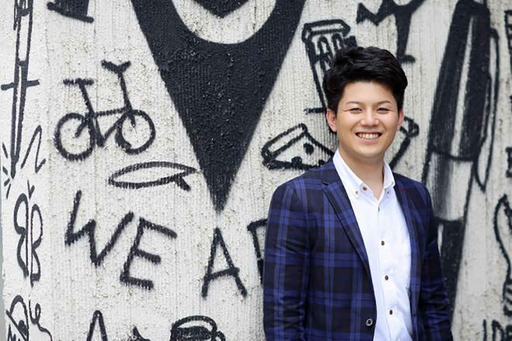
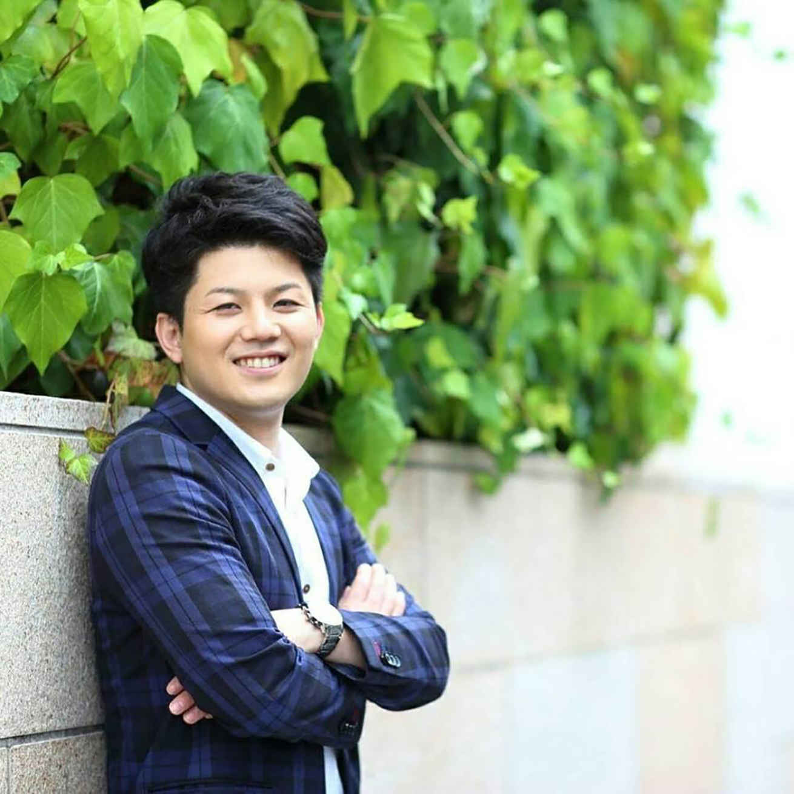
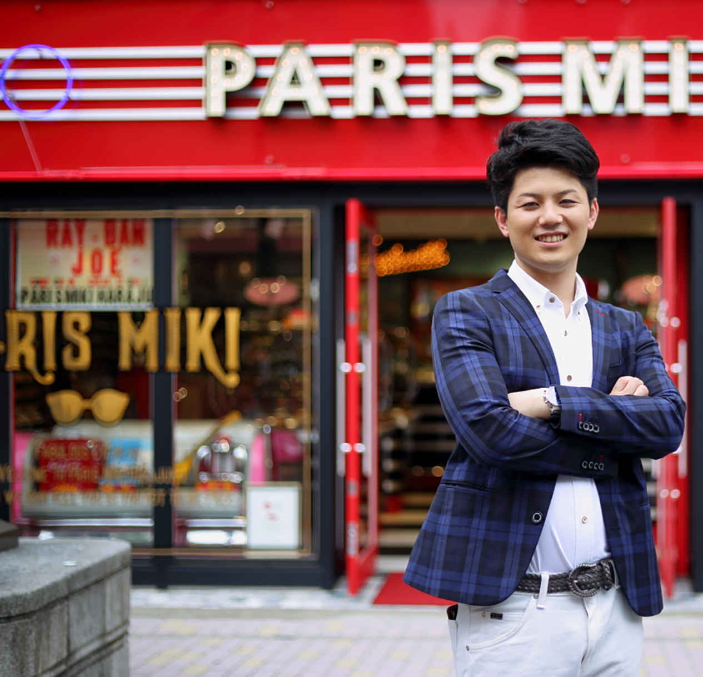

| 人生を一気に変える思考法 〜年収を３倍にする成功の極意〜 | |
| 南部健太 | |
| Hitotsuku Publication (2017) | |
南部健太
はじめまして、今なら「自分にもできた」とはっきりと言える南部健太です。
「えっ？ 何ができたの？」と思われたあなたへ。
この本ではそんなあなたに向けて、今から私の体験談を、わかりやすくお伝えしていきます。
今だからこそ言える事ですが、私自身もかつては「自分はできない人間だ」という思い込みが非常に強かった人間なのです。自分にはたいした能力もなければ知識もない、頑張って努力したりする事もとても苦手だと、自分自身、そうすっかり思い込んでしまっていたのです。
しかし、それらはすべて単なる思い込みにすぎなかったのです。昔はダメダメだったと思い込んでいた自分でさえも、思考が変わる事、価値観が変わる事によって「自分にもできた」と思えるような人間に、今ではすっかり生まれ変わる事ができたのです
。
今回、私は「自分はできない人間だ」と思い込んでいた頃の過去の自分と、「自分にもできた」と思えるようになった現在の自分との違いを比較してわかりやすく、これからお伝えしていこうと思っています。
これから何かやりたいと思っているあなた、理想を抱いているあなたには是非、これからお話しする非常に大切な考え方を取り入れて、自らの人生を変える事へのチャレンジに、今すぐ取り掛かっていただきたいと思っています。そして、この本が、あなたの夢や理想を実現する１つのきっかけとして役立つのなら、私自身著者として、非常に嬉しく思います。

あなたがもし、現状に満足できているのなら、今のその現状は全く変える必要がありませんが、もし少しでも、現状に不満がある、満足する事ができていないと言うのなら、その現状は間違いなく今すぐ変える必要があります。しかし、現実には、現状を変えられる人と変えられない人の２種類が存在しています。何故なら、かつての私自身がまさに、その「現状を変えられない人」だったからです。
世の中で成功と失敗を分けている物はいったい何なのでしょうか？
私は必ずしも収入が上がる事だけが成功だとは思っていません。成功とは、それぞれが思い描く夢や理想が本当に実現できているのかどうか？ という観点からこれから先の成功を見ていっていただきたいと思います。
あなたの好き嫌いに関わらず、間違いなく日本はギャンブル国家です。公営としてやっているものだけでも「パチンコ」「パチスロ」「競馬」「競輪」「競艇」「宝クジ」など、本当にいろいろあります。日本人はみなさんけっこう、ギャンブルがお好きですよね。あなたもそうではないでしょうか？
しかし、現在の私は、ギャンブルにそのような夢を追いかけるのは、普段の生活に満足できていない事の裏返しなのでは、と非常に強く思います。実際にかつての私は、ギャンブルにメチャクチャハマった生活をしていました。
そもそものきっかけは、18
歳の時に先輩に連れられて行って遊んだパチンコでした。しかし、その時はあっさりと負けてしまったのです。
しかし、その時遊んだ感覚がどうしても忘れられず、もう一度、今度は一人で遊びに行ってしまったのです。そしてその時に、当時流行っていた「仮面ライダー」という機種で、あろうことか大勝ちしてしまい、すっかりこの体験に味をしめてしまったのです。ギャンブルで勝ったのは、これが一番最初のスタートでした。
そして、これをきっかけに大学４年間はひたすらパチンコ店に、のめり込む毎日を過ごしました。大学にはきちんと行っていましたが、一番楽しみにしていたのはパチンコで、パチンコで遊ぶ為のお金を稼ぐ為にアルバイトをし、その給料のほとんどをパチンコで遊ぶために使っていました。
お陰様で、大学自体はストレートに卒業し、その後、22
歳で東証一部上場企業に就職する事ができました。しかし、就職後はひたすら会社と自宅との間を往復するだけの毎日が続きます。
朝８時に家を出てから、夜の22
時に帰宅するまで、なんとも言いようのないストレスを常に抱え、そして、その結果できたストレスが自然にギャンブルへと向かわせる行動へと駆り立て、休みの日は一日中ギャンブルばかりしている生活がいつの間にか当たり前の日常になっていました。
この頃から自分では「おかしいなぁ、おかしいなぁ」と思い始めていました。何故なら、心の奥底では常に自分でも「面白くない」「勝てない」「お金がなくなるのでは？」という不安が、渦巻いていたからです。
しかしそういった自分の想いとは裏腹に、実際には８年ぐらいずっとギャンブルをやり続けてしまっていたのです。もうそれは病気というか、完全に「ギャンブル依存症」の状態になっていました。「パチンコ」「パチスロ」をずっと続けていましたが、それでいて、生活が充実しているとかいったら、そういう想いには全くならなかったのです。
そんなある時、たまたまシンガポールに行く機会があり、私はそこでカジノでのギャンブルを体験してしまいました。そして、それ以来すっかりカジノにハマってしまい、これがきっかけとなって大きな人生の転機を迎える事になりました。会社が休みになる週末、私は毎週韓国に行き、ひたすらカジノをやり続けるという生活を２ヶ月間、ずっと続けてしまいました。そして、その結果、すべてのお金を失ってしまったのです。
日本のギャンブルで負けられる金額には限界がありますが、海外のカジノで賭けられる金額は青天井で、お金さえあればいくらでも賭ける事ができるのです。そして、勝つ時はすごく勝つ事もあったのですが、負ける事によってついに、お金に困る生活が始まってしまい、２０１６年の３月ぐらいにはクレジットカードの枠などもすべて使いきってしまい、最後は負債だけが残りました。そして、これが私にとっての人生のどん底でした。
これまで、高校を出て、大学を出て、大企業に就職して、人並みに、ある程度の収入をいただき、端から見ればけっこう普通だねと言われるような生活を送ってきた私でしたが、実際にはギャンブルに関する悩みを抱えていて、この時がまさに「どん底」の状態だったのです。会社から貰える給料は当時、20
万円代でしたが、同時に、返済も20
万円ぐらいあり、本当にどうしようかというところで、いろんな想いがありました。この時、と言っても、つい最近の、今から１年半ぐらい前のお話ですが、私が考えていた選択肢は大きく分けて３つありました。
①
けっこう辛かったので「もう自殺してしまおう」と考えた
。
②
法的な手続きをして解決を図ろうと考えた。この時は、実際に弁護士さんに相談もしたのですが、すべては自分の責任なので「こういう返済計画でやっていきましょう」という話し合いをするにとどまり結局、そこから先に話は進まず終わってしまった
。
③
最後に生まれた結論は、ビジネスの師匠の動画を見る事によって生まれました。師匠の教えを忠実に実行する事を、本当にやるしかなかったのです
。
人生で初めての究極にお金に困っている状態でした。この状況になったらもう「やるしかない」という状況に追い込まれているので「ビジネスの師匠の動画に出会った事」これ自体がまさに私自身の運命を変えるきっかけとなったのです。
私自身、以前はギャンブル好きでしたが、現在はビジネスとか投資とか仕事が本当に好きな状態に変わりました。人は好きな物ができると、ふだんの行動の優先順位が全く変わってしまいます。もともと私はギャンブルには行きたくないと思っていたので、別に行かなくてもいいと思えるようになった途端に、一切のギャンブルに対する未練がなくなってしまったのです。以前の私はと言えば「ギャンブルは辞められないだろう」と勝手に思い込んでいましたし、意思も弱いし、「ギャンブル依存症」とは一生付き合っていかなければならないと思い込んでいたのですが、それは単なる私の勝手な思い込みにすぎなかったのです。
私自身の経験から言える事ですが「起業」「副業」「お金を稼ぐ」という事に関して、センスとか才能は一切いりません。世の中で高収入を得る方法はいくつかあります。
①
高収入の職業に就く（医者、弁護士、会計士、パイロット等）
→これらの職業は今から相当勉強しなければなれないので、この選択は相当厳しいです。
②
自分でビジネスや投資を行う
。
→これは明日からでもできます。そして、これには、センスとか才能はいりません。必要なのは、ただただ量です。最初のうちは、とにかく行動量。そして、これさえあればできるのです。
「起業」や「副業」の話をすると、「Ｗｈａｔ」に関する質問をされる方が本当に多いのです。「Ｗｈａｔ？」とは、「何をやってるの？」「怪しいんじゃないの？」こう言う話をする方が多いのですが、実際に重要なのは「Ｗｈａｔ？」ではなく、「Ｈｏｗ？」どのように取り組むか？ が非常に重要
なのです。「どのような姿勢で取り組むのか？」「どのような思考で取り組むのか？」という事です。
例えば、「不真面目にやる人」と「真面目にやる人」。英会話教室に通うとしましょう。なんとなく周りが楽しいから、なんとなく英語が喋れるようになればいいなぁっていう人と、本気で海外に行きたい、仕事にしたい、絶対３ヶ月後には英語が話せるようになっていたいと言う人では、そもそも英会話教室に行く時の姿勢が全く違います。だからこそ、その部分が絶対重要なのです。前者と後者の違いが何から生まれてくるか？ っていうと姿勢からです。それは考え方でしかありません。この姿勢が、めちゃくちゃ重要なのです。なんとなく取り組む人と真剣に取り組む人では、絶対に結果が変わります。だからこそ、そういう結果を求めるのであれば、センスとか才能は一切いらないし、大切なのは思考が変わる事だけなのです。だから、そういった部分をしっかりと意識する必要があります。
今まで「何かしよう」とか「何かしたい」と思う事はあったが、実際には行動に移せなかった。本当に学んででも、始めようという意思がなかった。この違いは、何から生まれてくるか？ っていうと、やはりすべて考え方なのです。本気でやろうと思ったら、たいていの事はできます。自分の中の考え方を変えていく事が、今の現状を変える一番の要素であるという事をまずは認識していただきたいと思います。
「起業」「副業」には、決断が必要です。しかし、こういう時だけ考え方が甘い人が非常に多いのも事実です。本気でやろうという決断が必要なのは、就職、進学、結婚、すべて同じです。これらも、けっこう大きな決断をしていますよね。でも、ビジネスや副業の決断は、実際に決断できない、そもそも決断したがらない、いますぐやるという決断を下さない人が非常に多いのです。ビジネスは、しっかりとした決断をしてから始める事がとても重要です。なぜなら、決断をしなければ、その先の思考も変わらないし、取り組み姿勢も何もかもが全く変わりません
。
「現状を変えたい！」と思ったら、まずは変えるという決断をする事です。日常生活自体も決断の連続です。すべてが思考、これまでの価値観の基準です。朝になったら、起きる事など、コーヒー、歯磨き、食事、着替えなど、小さな決断は毎日やっていると当たり前になって、決断をしているという意識自体は全くありませんが、それらも小さな決断の連続です。私たちは、毎日いろんな選択肢がある中から選択をしています。そして、普段からいろんな決断をしています。しかし、そもそも人間は、現状を変える決断自体はしたがりません。常に先延ばしや保留、やらない理由を考えるのがほとんどですが、これは、人間なのだからしょうがありません。
人間の意識の中には「コンフォートゾーン」という、非常に居心地の良い空間があります。例えば学校に行って、転校するとなったら、非常に不安な気持ちになったという経験をした事はこれまでにありませんか？ これまでのグループから外れて新しいところに行くというのは、非常に不安ではないですか？
人間の心の中には、居心地のいい空間、みんな知っている、喋りやすい居場所があります。話も合うし、楽しい。そういった居心地のいい空間、コンフォートゾーンが形成されているので、人はここから外れる事を極端に嫌がる生き物なのです。だからこそ、痛みを伴う事については、人は決断をしたがらないし、先延ばしをしたがるのが普通なのです。しかし、これを乗り越えていく事によって成長が生まれますし、決断する事ができます。こういった部分をしっかりと認識していただいた上で、理想は48
時間以内に決断できるよう、これから意識して変えていくようにして下さい。何か決めるとか、決断する場合には必ず48
時間以内に決断し、中途半端な決断は絶対にしないと心に誓う必要があるのです。「Ｙｅｓ」か「Ｎｏ」かで、決断していく事が重要です。
実際には、私自身もなかなか決断できませんでしたが、少なくとも私の人生が軌道に乗った理由は、決断が早くなったからです。48
時間と言っているには明確な理由があって、人間の記憶は翌日になると半分以下になっているのです。そして、翌々日には、８割がなくなっています。そして、その時には、もう、その時の感情さえもなくなっているのです。だからこそ、48
時間以内に決断しないと2度と、決断できない自分が生まれてしまいます。しっかりと48
時間以内に決断するサイクルを厳守する事によって、あなたもしっかりと決断できる人に変わっていきます
。
決断ができるようになると、行動ができます。行動ができるようになると、結果が変わります。「48
時間」と言われている理由や、「三日坊主」という言葉が使われている理由が、正にここにあります。人間は、三日たったら忘れる生き物なのです。決断した時の感情や想いは３日もたないのが普通なのです。だからこそ、この間でしっかりと決断するサイクル、思い出せるようなルールを決める事がとても大切で、実際に私が結果を出せるようになったのも、決断を早くできるようになった事が大きく関係しているのです。
ビジネスや副業で結果をだす為に、最も重要なのは「思考」や「マインド」
です。実は「ノウハウ」「Ｗｈａｔ」「Ｈｏｗ」などが重要なのは２割程度で、「マインド」や「思考」の重要性の方がほとんど、８割以上も占めてしまうのです。これは私だけが言っているのではなくて、年間１億以上の利益を出している人、多くの収益を出している人達はみんな、口を揃えて同じ事を言っているので、まずは間違いありません。
ある時期まで、うまくいかなかった人が、急にうまくいくようになったりするのは、思考の部分がきっかけになるのが、ほぼすべてです。何かと疑う前に、まずは、そう思った方が間違いありません。実際に私がどう思っているかというと、私の場合は、ノウハウは ０．１割ぐらい、マインドが９．９割重要であると断言したいと思います。大げさに思うかもしれませんが、それぐらい「思考」とか「考え方」がすごく大切なのです。
これらがなぜ結果につながるのでしょうか？
結果は何から来ているのでしょうか？
思考が変われば行動が変わる。
行動が変われば結果は変わります。
「月に３万円の副収入が得られるようになりました」というのは「適当にやった、ちょっとポチポチやった」ぐらいではいきません。それには３万円いくためにふさわしい行動量があったから、その結果が出ているのです。そして、その行動は何によって生まれるか？ というと習慣から来ているのです。
・習慣が変わると、結果が変わります
・行動が習慣化する事によって結果が変わります
・継続性から考えると習慣になっていかないと、結果はなかなか変わりません。
（思考→行動→習慣→結果）
朝起きたら何をするか？ などの考え方はすべて、その先の行動に関わっています。朝ごはんにパンでしょって、思ってる人はパンを食べますし、行動は、判断基準に基づいてできています。そして、この行動を繰り返す事によって、習慣になっていくのです。
例えば、ダイエットを例にして考えてみましょう。
ムキムキになりたい、筋肉をつけたい、そういう想いを持っている人と、なんとなくでいいや、と、そんなに興味のない二人がいる場合のマインドの違いについて考えてみます。
前者は、ムキムキになりたい。筋肉をつけたいと思っているので、
・今日は時間がないからトレーニングちょっとしかできない。
・トレーニングしたら、美味しいものを食べてしまいたい
とは考えません。
・トレーニングしたらプロテイン飲まないと損だ。
・朝ごはんはササミでしょ、タンパク質採らないと
と本気で思っています。
・せっかくトレーニングしたからササミでしょ。プロテインでしょ。
・もったいない。アイスなんて無理です。
・もう一回、プロテインにしよう。いやいや、ササミでしょ
と考えるなど筋肉に対する姿勢が全く違います。
後者は、なんとなくでいいやと、ダイエットにあまり興味を持っていないので、
・朝ごはんは、ほどほど、でもごはんは欲しい、卵は欲しい
・焼肉定食のごはん大盛り食べて、食後のアイスも欲しいな
・サラダ、ハンバーグ、ビール、締めのラーメンも食べたい
のように考えています。
つまり、目指すべき姿勢が全く違うのです。この食生活の違いがあれば、結果が変わらない訳がありません。毎日ササミを食べている人と、毎日ラーメンを食べている人との違いは、１ヶ月後、２ヶ月後になると必ず結果として現れてくるのです。これが、「思考→行動→習慣→結果」です。
ビジネスで結果を出したい時に「Ｈｏｗ ｔｏ」を聞いてくる人が本当に多いです。しかし、実際には、やる理由もかなり重要で、ここが明確でないと行動まで変わりません
。そもそも強い意志がないと、行動を続けられないからです。だからこそ、今結果を出されている人に近づけていく努力が必要なのです。それに伴って結果が変わってきます。
「なぜ？ 変われる人と、変われない人がいるのか？」それは、思考が変わらないからです。変える為には、きっかけがあるのかどうか？ がとても重要です。そもそも自分には向いていないんじゃないかと思っている人が多いですし、やり方を重視する人もいますが、すべては思考が変わる事です。残念ながら大多数の人が決断をしたがらないので、だからこそ、コンフォートゾーンから抜け出し、しっかりとした決断をスタートする必要があります。目安としては必ず48
時間以内に決断する習慣をつけていきましょう。
価値観や考え方が一番大きく変わるきっかけは、人との出会いによってしっかりと価値観を他人によって変えてもらう事
です。コンフォートゾーンを抜け出し、あなたの思考、考え方を、成功に近づけていく為には、やはり一人では無理であると私は考えるのです。

起業については「本当にできるの？」っていう話をされる方が多いですし「無理でしょ」って思う方も非常に多いです。実際にやってみたからわかる事ですが、もちろん今日やって明日結果が出るなどという事は、ほぼありえません。しかし、実際に１年間しっかりやって、継続して出た結果が、実際には私のような結果であるという事なのです。
私自身の起業のきっかけはギャンブルでした。それは「お金に困っていたから、やるしかなかった」というのが理由でした。どん底にいた時は、いろんな想いがありました。今のこの状況をなんとしてでも脱けだしたいと......本来の私は、前向きに努力したりするのはすごく嫌いで、もともとは、非常に怠け者の性格でしたしかし、いろんな人との出会いの中で価値観が変わっていきました。これまで自分が大切にしてきたもの......周り、世間体など、これまでずっと気にし続けてきた物がすべて、ものすごくちっぽけな存在に思えてきました。
お金もない、何もない、仕事が凄く優秀でできた訳でもない、友達がめちゃくちゃ多い訳でもない、人気がある訳でもない、すべてがちっぽけな物に思えてきました。そして、自分がやらかしてしまった事を本当にどうにかしたい、なりふりかまわずやろうよ、かっこつけないでいいじゃない、やろうよ、自分との戦い......と本当にいろいろな事を考えました。ギャンブルは、ずーっと辞めたいな、辞めたいな、と思いながら、それでも辞める事ができませんでした。
しかし、もういい加減本当に辞めようよと思い始めた時、これまでの価値観や自分が気にしてきた事、周りの事、人からどう見られるか？ これらすべての事がちっぽけに思えてきたのです。そして、すべてを失った瞬間に、もうどうでもいいんじゃないか？ それよりも、今の自分をしっかりとやり直したいな、っていう本音に、やっと気付く事ができたのです。
私自身、もしここまで困っていなかったら、ここまで思えなかったと思います。今でもまだ会社員を続けていると思いますし、もやもやした生活が今も続いているんじゃないかと思います。しかし、それを思うと、今の自分にとっては、ちょっと怖いですし、あの時、気付けて本当に良かったな！ って心の底から思います。起業に関して自分が変われたきっかけは、本当にお金に困る事ができた事だった
のです。
私自身、これまで起業して１年半ぐらい活動してきて、本当にいろんな方とお話しするようになりました。「人生変えたいです」「自由な生活をしたいです」「収入が月に１００万円欲しいです」というような、お話をされる方が多いです。
私が「今、何をされていますか？」と質問すると「これから何をしようか考えているところです」「今、考えています」と答える人が非常に多いのですが、そう考えているのなら、今すぐにやった方がいいというのが私の考え方です。「何をしようかと考えているんだけど、いろんな問題があるんじゃないか？」「実際のところ、本当に自分にもできるんですか？」いろんな話を聞くのですが、そう思ってるんだったら、今すぐ行動に移してください。
しかし、実際に行動を始めようとする場合、その行動の仕方はけっこう重要です。実際に、起業、副業を始めようとした場合、どのように始めるべきなのか？
いろんな始め方があります。例えば本を買ってくる、YouTube で動画を見る、教材を買ってみる、ネットサーフィンをする等、いろいろありますが、私は、独学でやる事ほど、無駄な時間はない
と思うのです。
ネット上には、無料の情報から有料の情報まで、さまざまな情報があふれていますが、無料の情報だけで実際に結果を出している人の話は、まず聞いた事がありません。自分にとって必要な情報に対してはしっかりとお金をお支払いいただき、お金をかけて学んでいただく事が必須なのです。何故？ ここまで言えるのか？ と言うと、私自身に独学でやろうとして全くうまくいかなかったという過去があるからなのです。
まず第一弾は「ＦＸで稼ごう」とチャレンジした事でした。今から考えると非常に、ムチャクチャなやり方をしていました。まずは、お金を入れて実際に賭けてみます。これは全くの無知な状態でやっています。そして、当然の事ながら、負けます。そして、そのうちにだんだんやる気がなくなっていきます。「勉強するために、本を買ってみよう！」と思い立ち、実際に本を買いに行きますが、ＦＸは本を買ってわかるほど簡単ではありません。本を買って一方通行の情報だけでできるほど甘くないのです。それは、何故なのでしょうか？ 本だけだと明確に間違っているところを指摘してもらう事ができません。また、作業量の基準も全くわかりません。そのような状態で、ずっと続けても、それでは、なかなか結果がでないのです。もし10
年も20
年もずっと研究し続ける事ができれば、やがて結果は出るかもしれません。しかし、私には、そこまで時間をかける事はできないのです。今すぐにでも結果を出す必要があるのです。そう考えると、今では本当に無駄な時間を過ごしてしまったな～っと心の底から思うのです。
第二弾は「ブログアフィリエイトで稼ごう」とチャレンジしてみた事でした。まずネットで検索して、ブログを書き始めます。始めてから３日間、ずっと記事を書き続けます。しかし、いつまでたっても、そのブログに訪問者が訪れません。つまり、やり方がムチャクチャな状態で始めてもブログアフィリエイトで稼ぐ事は不可能で、結局その作業は、３日で辞めてしまいました。そこには、本当にこのやり方で稼げるのかなな？ と疑っている自分がいました。
そこで、実際に結果を出している人はどのように稼いでいるのか？ と、いろんな動画を見たり、ネットで検索してみました。その結果、至った結論ですが、結局、一人で独学でやってできるようになった人は、一人もいない
という結論に達しました。
少なくとも、誰かには必ず教えてもらってやっているのです。教えている人も、誰かに教えてもらいながらやっているのです。順番に教わりながら、やってきているっていう事がだんだんわかってきました。結果を出している人には必ず、メンターや師匠っていう人が必ずいる
。自分は、間違ってる事をずーっとやり続けてきたんじゃないか？ このままだといつまでたっても結果はでないし、続かないんじゃないか？ と考えるようになり、そこから、自分も誰かに教わりながらやらなければ、この先結果を出す事はできないという結論に至りました。
そう考えた瞬間に、私には運命の出会いがありました。YouTube 動画との出会いです。この人に教わりたいと思える人の動画を見つける事ができたのです。私は、早速、その方に向けて、ＬＩＮＥでメッセージを送りました。「人生変えたいんです。ちょっと教えてもらえませんか？」っていうメッセージです。すると「それだったら良い方法があるので、私と一緒にやりませんか？」という返信が返ってきて、結局、私はその方から直接学ぶ事に決めたのです。
これから起業や副業を始めたい人の中には、私は人と話すのが苦手だから一人で独学でやりたいと考えるような方も、もしかしたらいらっしゃるのかもしれません。しかし、ビジネスは本を読んだだけでできるような、そんな甘いものではありません。例えば、大学受験の時、みんなが買う本として赤本がありますが、あれを読んで、自分一人だけで家で黙々と勉強して大学にうかってしまうような人がこの世の中にいらっしゃいますか？ っていう話です。本当に受かりたい人は絶対、みなさん必ず予備校に行きますよね。やはり、客観的に弱点を指摘してくれるような先生の存在は必要ですし、一緒に学ぶ仲間の存在も、お互いに刺激しあえるような環境も非常に大切なのです。そもそも、自分一人だけで結果がでるまでひたすら孤独な作業をし続ける事は、なかなかできませんし、もし間違った作業をしていたとしても、間違っているという指摘を誰もしてくれません。実際に結果を出していくためには、スクールのような場所で教わる事が絶対に必要なのです。
結論から言うと、結果を大きく変えるには、環境を変える事が一番手っ取り早い
のです。しっかりと人から教わって、かつ環境も変える。これが一番早いのです。才能はいりません。そこにいる人はみんな、ゼロの状態から同じ想いを持ってスタートするのです。だからこそ、その部分が一番重要なのです。
サラリーマンが、サラリーマンのままで、会社という環境の中で、副業で結果を出す事は何故、難しいのでしょうか？ 会社の中でのサラリーマン同士の会話の中身となると、ずっとアプリのゲームの話をしてたり、ずっとパチンコの話をしてたり、他には上司の愚痴、家庭の愚痴、女性に関する話題など、ビジネスとは全く関係ない話題がほとんどです。いい、悪いの問題ではありませんが、それらの話題は、ビジネスや投資をする上では、全く関係ありません。つまり、会社員が、会社員の環境のままで、副業で結果を出していく事は本当に厳しい
のです。
あなたがもしも環境を変えたいと思うなら、必ず自分よりは収入の高い人が含まれている環境の方が良い
ですね。このような環境だと、非常に効率の良いやり方や最新の情報、成功者の考え方が自然に耳に入ってくるので、間違った方向に進む事なく、しっかりと正しい方向に進んで行く事ができるようになります。本気で収入を上げたいのなら、是非、収入の高い人のいる環境の中に飛び込むようにしてください。
例えば、自分一人で今日はうどんがいいなって思ってたとしても、残り９人が全員、今日はそばでしょって言ってたとしたら、今日はそばにしておいた方がいいのかな？ って思ってきちゃう。人間とは本来、そういうまわりからの影響を、ものすごく受ける非常に単純な生き物なのです。
ふだんあなたの周りにいる５人の年収が、あなた自身の実際の年収である
というお話を、あなたは、これまで聞いた事はありませんか？ 周りの環境が変わる事によって、それは上がったり、下がったりしますが、あなたはただ、その環境にいるだけで、当たり前の基準が徐々に高くなってくるのです。
「いや～それはありえないでしょ」っていう感覚だったり「自分って大丈夫かな？」っていう感覚だったり、自分一人では全く気がつかないような影響を周りから受け始めると、自分にももっとできるんじゃないかなと思って、一気にやってしまうとか......自分自身の成長につながるプラスの影響を周りからたくさん受ける事ができるようになるかもしれません。
逆に、真面目に仕事をしていない人がもし周りにいたとしたらどうでしょうか。自分が副業としてやっている時には、まわりは全員脱サラしているという状況の時がありました。逆に、自分が脱サラしてからは、一人だけ会社員の方がいるという環境の時もありました。全員が脱サラしている環境の場合は、日曜日に遊びに行ってもなんともありませんが、会社員だと必ず「あ～明日からまた会社や～」というふうになってしまいます。
「環境を変える」とは「周りの影響を受け、周りが普通になり、周りを基準の高い人達で揃える事によって、自分という人間をしっかりと引き上げてもらえるような環境に身を置く」という事なのです。
あなたがもし早く収入を上げたいと思うなら、しっかりと教わる為に環境を変える事はとても大切で、非常に効率よく、早く、実際に私が結果を出せた理由は、そこを素直に受け入れて、素直に実践できたことが非常に大きいのです。
自分がうまくいった理由は、「学ばないとできないんだ、自分だけだと、そんなに能力高くないし、優秀じゃないぞ」って思ったからこそ、「教えてもらってからやった方がいいよね、まわりの影響を受けるから、まわりに自分より優れた人達を置いた方がいいよね」って事で取り組んだ結果だと思います。つまり、そのように実践していくことで、しっかりと結果は残せていくものだと思います。
つまり、私が早く結果を出すことができた最大の理由は、私に才能があったからでは決してなく、学んだことを愚直に、素直に、実践し続ける事が誰よりも早くできたから
なのです。
自分一人で作業をして、結果を出したい、利益を出したいという場合は、一人で転売をしてみたり、投資をしてみたりという事になりますが、短期間で一気に収入を上げたいと思った場合には、大きな観点から言うと、あなた自身が、ノウハウや情報の提供者になっていくことが、短期間で大きな収入を得られる結果につながっていく
事になります。
例えば、あなたが「コンビニ」に買い物に行くとします。買う側、つまり消費者としてお店に行ったとしても、それはあなたの収入には全くつながりませんが、売る側、つまり「コンビニ」を経営する側としてサービスを提供した場合には、あなたは「コンビニという事業」から収入を得る事ができるようになります。
これを、塾やスクールの場合に置き換えると、あなた自身が「生徒として教わる立場」から、「講師として教える立場」に変わる事によって、あなたは「塾やスクールという事業」から収入を得る事ができるようになるという事です。
自分自身の収入を一気に上げたいと考える場合には、あなた自身が、販売者、教育者になる事を真っ先に考える必要があります。それは、自分自身がやった結果が、売上や利益としてより多く、将来的に見込めるようになっていくという事を意味します。
あなた自身のスキルが十分に上がり、師匠の教えがなくとも、十分に稼げるようになったら、今度は、あなた自身が教える側にまわり、あなた自身の収入を増やしていく事も十分に考えられるのです。いずれは自分が教える立場になるのだという強い決意を持って、今後ビジネスに取り組んでいけば、あなたの成長スピードは想像以上により早まっていく事になるかもしれませんね。
今、あなたが得ている結果は、これまでのあなたの生活から導き出されているものですが、これから先は、あなたに、私のビジネスの師匠から学んだお話をお伝えしていきます。
あなたは、今までの価値観で育った結果が、今現在の自分を作っているという事を、心の底から深く理解する必要があります。そして、今後は、価値観を大きく変えていかなければ、未来の結果も決して変わらないという事を十分に理解してください。つまり、今後の結果を大きく変えていくためには、この「価値観」そのものを、大きく変えていく必要がある
のです。しかし、これまでの価値観を、急に他人の価値観にいきなりインストールしなおしたりするのはやはり、かなりの難易度が高いですよね。もしあなたが、できるだけ早く結果を変えたいのであれば、あなた自身が、思いっきりフラットな状態になる必要があります。そして、結果を出している人の考え方を素直にそのまま受け取り、インストールできる状態を維持し続ける事がとても大切だと思います。
「時間」それは、誰もが持つ永遠のテーマですね。そして「時間」それは唯一、誰にとっても久しく常に平等なものです。家庭環境、家庭の事情、見た目、外見など、こういう物には個人差があるのは当然ですが、唯一、誰にとっても平等なのが「時間」です。一日が48
時間ある人なんてどこにもいません。誰もが同じ24
時間の中身を、どのように使っているのか？ これの使い方は自由で、経営者ほど時間の使い方に対する意識が高く、時間を大切にするのです。失われた時間は、もう２度と戻ってきませんが、お金なら、稼げば、戻ってくるのです。しかし、時間だけは、逆立ちしても絶対に戻ってきません。だからこそ、時間をすごく重要視しているのです。
副業で結果が出ない要因、取り組めない原因のほとんどが「時間がない」という事です。しかし、時間さえかければ当然、ある程度の結果はついてくるものなのです。
10
万時間かけると誰もが一流になれるという話をあなたはどこかで聞いた事がありませんか？ 時間をかけられるというのは、何よりもいい事なのです。しかし、時間が取れない事がネックになっている場合がほとんどです。特に副業の場合、時間が取れなければ、当然結果を出す事が非常に厳しくなってきます。時間はないのではなく作るものです。時間は誰もが平等に持っているものです。しかし、現実には時間が作れている人と、作れていない人がいます。
会社員の人の副業の場合は、本当にきついですね。
朝７時に出勤
８時から仕事
12
時から休憩
13
時から仕事
20
時帰宅
21
時飲み会、食事、お風呂、デート
22
時帰宅
23
時食事、掃除、洗濯、炊事
24
時ビールを飲む、テレビを見る、YouTube を見る等
一般的な会社員の生活、つまり私自身ががそうだったのですが、自分から意識していかなければ、会社員に空いている時間は、ほとんどありません
。
そもそも私は残業が多かったので、帰宅時間が遅かったのです。そして、遅い時間に帰宅して寝るという生活だと、そもそも時間がありません。何かやろうと思っていても、結局いつやるの？ っていう話に戻ってしまうのです。
きつい、忙しくない人はいない、その中で時間をとってやる事になるので、それらはすべて、「優先順位のつけ方」
の問題になります。ビールを飲むのか？ 副業するのか？ テレビを見るのか？ お金を稼ぐのか？ YouTube を見るのか？ 選択、会社員をやるのか、副業をやるのか？ すべて「優先順位のつけ方」の問題です。そういった事を含めてしっかりと決めていく必要があります。最初のうちは副業で始めていただくのがいいと思っているのですが、そうするとやはりいつまでたっても、時間の足りない生活が続くという事になります。
何か新しい事に挑戦する時には、そのままでは入らないので、常に何かを捨てていく必要があります。食事の時間を削り３分で一気に食べるとか、パソコン作業をしながら食べる事も考えられます。また、お風呂の時間を削る為に、シャワーをパーっとかけて終わりにする、臭くなかったらいいと割りきって、ゆっくりしたいという気持ちを捨てる。遊びを完全に辞める、休日にどこかに出かける事を一切辞めるというのも、一つの案です。捨てないと時間を作れないので、お酒も辞めた、YouTube を見るのを辞めた、テレビも辞めた等......これぐらいやって初めて、会社員は時間を作る事ができるのです。そもそもの時間の作り方を知り、優先順位をしっかりとつけていく事、会社員でも作れる時間は誰にでも平等なので、これからは、しっかりと時間を作る努力をしていきましょう！
本当に結果を出したいと思ったら、副業とかビジネスで、見栄や変なプライド、世間体などは一切必要ありません。医者、弁護士、会計士、公務員以外、大企業の会社員以外に、世間体は必要ありません。あなたの近くにいる居酒屋のおっちゃん達は、世間体など気にしていませんよね。
逆に、世間体を気にし始めるとうまくいかないし、邪魔になります
。また、変な見栄があると、人の話を聞けないし、素直になれない、年下のうまくいっている人の意見が素直に聞けない、なかなか結果がついてこないなど、さまざまな弊害があります。
変なプライドがあると、人に質問はできないし、会社だって辞められません。プライド自体は悪くはないし、必要な人はそれでいいかとは思いますが、それではやはり、収入の限界がいつか来てしまいます。時間の自由がきかない、収入の限界を取り除きたい、時間の自由が欲しいなどの場合は、しっかりとこれまでの過去の習慣を捨てて、真っさらな気持ちで、一から取り組んでいただく必要があります。実際、私はこの時に過去の悪い習慣を、すべて捨てさる事に成功しました。
私自身も昔は、周りの目をすごく気にしていた時期があります。大学は国公立、就職は一部上場企業、でも......結局は、ただそれだけの事です。何故、それを選んだか？ というと、人からどう見られるか？ ただそれだけを気にしていたからです。自分がそれをやりたいかどうかなど、一切抜きにしていました。
副業の場合は捨てられるか？ どうかというのもポイントになりますが、それでも、なかなか捨てられません。特に、会社勤めで、10
年も20
年もやっていた人が、それを捨てるっていうのは、けっこう勇気がいります。長ければ長いほど、勇気がとても必要です。
一般的に考えると、世間体の良い会社に行っている人達は、人の目には触れない部分で、物凄い努力をしています。だからこそ捨てにくいもの、変なものがひっかかってしまうと、やはり動き出しはとても遅くなってしまいます。しかし、こういうしがらみを素早く簡単に捨てられる人ほど、実際には、より早く結果が出やすい
のです。
私自身、恋愛に関して達者とかそういう訳では全くないですが、一つだけ確実に言える事は、一会社員が副業とか独立しようっていうのは、そんなには甘くないっていう事です。それぐらい本気でやらないと「実現は難しい」と考えています。目標を立てたのであれば、絶対にそれだけを最優先にすべきかなと考えます。
しかし、例えば......「月に50
万円の報酬が欲しい」と言っている人に２週間後にどうですか？ と聞くと「いや～、ちょっと遊んでしまいまして......」なんて事が非常によくあります。
遊ぶ事自体は決して悪い事ではありませんが、遊んでいても収入は上がりませんし、優先順位をはっきりつけて取り組んでいかないと、結局どっちもうまくいかなくなってしまうのです。私の場合は、まず最初に何がなんでも、お金の問題を解決したいというのがありました。お金に困っているという現状がある中で、何かセーブしてしまっているものがあるのではないか？ だからこそ、まずは自分が頑張って稼いで、その後の時間を有意義に過ごせるようになれればいいなと......。
お金がそんなに大切だとは思わないからこそ、その先で、お金がないからできない、お金がないから迷ってしまう、千円のランチを食べるのに悩む、お寿司を食べるのに悩む、そのような悩みが生まれてしまう事自体を避けたい。その先のお金の事を気にしないで生きられるように現実を変えたい。そのように思っていたのです。そんなある日、私はビジネスの師匠から「この３ヶ月とか１年、本気でやったら、その先変わるよ」
と、励ましの言葉を頂いたのです。
その時は「３ヶ月ぐらいだったら自分にも頑張れるだろう」って単純に思ったのです。だからこそあなたにも、最初のうちは目標だけを見据えて、ただひたすら愚直にやっていただきたいのです。
恋愛に関する誘惑など、会社員に誘惑は付き物ですよね。飲み会にパチンコなど、平日に遊びがあるのは、本当に断りづらいですよね。しかし、誘われたなら、最初は行ってもいいですが、絶対に１次会で帰るようにしましょう。何故なら２次会まで行ってしまったら、もうそこから先は永遠に終わらないからです。
次からは断ってみましょう。徐々に、そして、途中から行く等もありです。（やる事をしっかりやってから、今日はやる事があるから、終わってから行きますと言う）いつも断っていれば、だんだん誘われなくなってくるかと思います。とにかくそもそもの誘惑がなくなってくれれば、断る必要もなくなってきますからね。
私の場合は恋愛に関する誘惑はありませんでした。それは、私自身があまり積極的じゃない、モテる訳ではなかったからですが、実際に恋愛は良くも悪くも両方に作用します。彼女の為なら、めっちゃ頑張れる、その人の為になら何でもできる、こういう相手だったらいいのですが、集中できない、時間がとられるというような相手の場合は、やはりどうしても恋愛そのものが障害になってしまいますよね。恋愛に関する誘惑がある場合は、そこでの優先順位をきちんと明確にした上で、すすめていくようにしましょう。
あなたが副業で結果を出していく上で、やる理由はかなり重要（Ｗｈｙの部分）
です。「何故やるのか？」この部分が本当に重要です。ここがはっきりしていないと、そもそも副業は続きません。
あなたは、何故？ お金が欲しいのですか？
あなたは何故？ ビジネスをしたいのですか？
あなたは、何故？ 副業をしたいのですか？
結局は、お金にまつわる話です。究極的には、お金があっても何もできません。お金そのものには価値はなく、お金は非常に無機質です。そこには、絶対的な理由がないといけませんし、実際に明確なやる理由がないと、そもそも続きません。
例えば、ダイエットを例にします。ダイエットをやる理由とは、「痩せたい」という事です。
何故（Ｗｈｙ）痩せたいのか？ 健康のために痩せたい、人からよく見られたい、モテたい、好意を持たれている人のタイプが痩せている人だった......そういった明確な理由がある場合には、単なる痩せるは脂肪の燃焼だけの問題です。
痩せる事によって、どんないい事があるのか？
どんな事をやりたいのか？ 何故やるのか？
副業の場合は、何故、お金が欲しいのか？
多いのは、旅行に行きたい、服がほしい、会社を辞めたい、時間の自由が欲しいなど......。
私の場合は、困っているからやるという、理由がとても明確でした。毎月いくら返していかなければならないから、これぐらいの収入が必要。稼げなければ、死にます。という明確な理由がありました。それがなければ非常に厳しいのです。現状に満足してしまっている人は、なかなかそれが原動力になりません。
人間の原動力は２つの要素から成り立っています。
①
望みの欲求～......したい。......なりたい。
美味しい物が食べたい、会社に雇われず、楽しく生きたいなど、この欲求はけっこうぼんやりしている事が多いものです。
②
脱出の欲求～現状の不満なところから脱出したい。
会社を辞めたい、お金に悩む時間から離れたい、今の生活を抜け出したいなど、脱出の欲求の方が、エネルギーがあります。
あなたには、いろんなやりたい事があります。そして、やる理由を考える時に【今やっている事で、絶対に辞めたい事を考える】と、やる理由が明確に見えてきます
。やる理由は、あなたがビジネスを続ける大きな原動力になります。原動力とやる理由さえあれば続くので、続けば結果が必ず出ます。ここをしっかりと考える必要があります。
成功しやすい具体的な目標設定には、ポイントがあります。
まず、
①
非現実的でなく、距離感があまり離れていないもの
今現在は、会社員です。でも１ヶ月後には１億円を稼ぎたいです。このような無理な目標設定は、あきらめが入ると、うまくいきません。目標は、現実的なものがいいのです。ただ近すぎて楽勝すぎるのも、あまり意味がありません。この距離感がけっこう重要なのです。環境の似ている人が、これくらいやって、これくらい行きました。......というのがあれば、それを目標にするのが、理想だと思います。
目標に関して質問すると、５年後にはこうなっていたい、とか、２～３年後には、と答える人がけっこういます。悪くはないのですが、それだと先すぎてイメージしにくいです。
②
長期、中期、短期の目標設定（半年、３ヶ月、１ヶ月）をする
。
長期と言っても、最長で１年か、おすすめは半年です。何故か？ と言うと、今この瞬間とか明日から何かできるか？ と言うとできないのが普通です。人間は弱いので、それぐらい追い込まれないとできないし、長期で言えば半年がいいのです。これをサイクル化して、１ヶ月の目標設定を、毎月やっていくようにします。そうすると、いずれ収入も上がっている事でしょう。
ポイントは、期限と具体的な数値を入れた目標を作る事です。そうでなければ、そもそも何をしていいのかわからない目標になってしまいます。
悪い例：生活を良くする、楽しく生きる
→明日から何したらいいのかわからない。
良い例：１ヶ月後に副業で５万円の収入を作る
→こういう目標の方が良く、何をしたらいいのか具体的にわかりやすい。
③
目標値から逆算して、日々の行動目標を作る
。
例えば、５万円が目標なら、１ヶ月は30
日だから、１日１５００円～２０００円の利益が得られれば良い、など。１日、それぐらいの利益の出る行動をしっかり続けていけば良い。しかし、そこがけっこう明確でない人が多いのです。そこが終わらないまま明日を迎えると、目標に達する行動ができていないので、うまくいかない。何故？ どうして？ と、そういう風に言っているうちに月日がどんどんたっていってしまうのです。
短期目標に対する日々の具体的な行動量を決める事。タスクを決めてあげる事がすごく重要な目標になります。
その他に、追加で重要な事について説明します。
・目標を決める事に関して、変更はＯＫです。とにかく自分次第なので、人とは比べないようにしましょう。しかし、決めた事は最後まできちんとやり抜きましょう。
・目標を達成する事で、どんないい事が訪れるのか？ を常にありありと想像する。月に５万円収入が増えたなら、彼女に素敵なプレゼントを買ってあげる。両親にご飯をおごってあげる。～など、想像する事で目標に対する達成意欲が高まります。
・目標が達成できなかった事によって、どんな不幸が訪れるのか？ を常に想像しておく。それを、作ってしまう、約束してしまう事によって、目標に対して執着する事ができます。
例えば、達成しなかったら大切な人を失う、絶対嫌な罰ゲームを受けないといけない、退路を断ってしまう、会社員だったら会社を辞めてしまって、目標が達成できなかったら本当に死ぬという状況に追い込むなど、それぐらい追い込んでしまって、そこに向かってやるというのがすごく重要です。
ここで、私の【ビジネスの師匠の言葉】を、お伝えします。
人生はすぐには変わらない。絶対に。
でも、人生の方向性はすぐに大きく変えられる。
今日からやろうと思ったら明日から変わる。
稼ぐために有効な時間の使い方とは、自分の時間をすべて目標達成のために使う事なのです。
できない事は、ありません。私には、ビジネスの先生がいて、その方は年収６００万円だったのが、４年で７億円になりました。私自身は、年収５７０万円から１５００万円に変わりました。
特別な知識とか才能、スキル、資格など、何もない状態から自分の理想や夢を追い求めた結果でも、このような結果になりました。だから、あなたにも是非、もしできる方法があるとしたら、絶対にこれからチャレンジしてみてほしいと思います。
自分の中で、何か、制限をかけている事はありませんか？
自分はもう結婚しているし、奥さんもいるし、子供もいるし、とか、自分は能力ないし、そんな目立ちたくもないし、そんなに今は変えなくてもいいかなと思っている人もいるかもしれません。少なくとも、今、自分の感情にフタをしているとしたら、それはやはり、取り除いてほしい
なというのが、この本であなたに是非、お伝えしたい事です。
とは言っても「本当にできるの？」「私にもできるの？」「今じゃない」「怪しい」等、今すぐやらない理由を並べ立てる人が非常に多いのが現実です。実際に私もそうでした。「今やらなくてもいいんじゃないか？」「そんなの本当にできるかどうかわからないし、何か怪しいよ。」いろんな言い訳がありますが、一つだけ言える事は、やらないと何も変わらない。変えたいと思っているのなら、是非やるべき
という事です。
結局やってみないと何もわかりません。もっというと、やってもわからないかもしれません。しかし、常に感情や理想を追い続けるっていうのは、少なくとも、今は楽しいのではないでしょうか？ 今の会社で、もやもやした時間をただただ過ごすよりは、今すぐチャレンジして、ダメだったらダメで、それでいいのではないでしょうか？ 実際、自分自身が、大きな失敗をしているというのがあるので、ダメだったら、別に、ダメな時に戻るだけなので、それはそれでいいかなと思っています。
この本でお伝えしたい事っていうのは、今、もしやりたい事があるとか、理想の生活に近づいていないという事があったら、今すぐ行動を起こしてほしい
なと、私が思っているという事です。
あなたの思い描く理想の場所に、最短ルートで行く唯一の方法とは、うまくいっている人の真似をしっかりして、うまくいっている人に会いに行って聞く
。それが無理な場合は、ＬＩＮＥをしてコンタクトを取るとか、電話で話すなど、いろんな選択肢があるので、そういった選択肢を、今はただ、とにかくやるというのを常に心がけていけばいいのではないでしょうか。
私には、あなたが人生は変わらないと思っている事が、非常にもったいないのです。あなたのその考え方、価値観、思考の部分さえ変わってくれば結果は必ず出てくると思います。まずは、その事をできるだけ早くあなたに理解していただきたいのです。思考さえ変われば、あなたの人生は一気に変わります
。

私が伝えたい事は一番最初に伝えた事と同じです。
私自身は、確かに本当にお金に困っていました。しかし、今思うと、それは単なるきっかけの一つに、過ぎなかったのです。
自分に劣等感がありました。楽な方に流されてきたという過去があります。
でも、それなりに周りにいい評価をされて生きてきました。
けっこう自分の中では、ダメなんじゃないかと思っていて、それってお金じゃなくて過去の弱い自分にこれまでずっと目を背けてきたこと。
まずはちゃんと自分を見ようよ。
弱い自分を直視しようよ。
これからの未来をよくしていこうよ。
過去の弱い自分と決別したかったのです。
そして、それが、今の結果につながっています。
この本でお伝えしたい事は「今、本当にできるのかな～」とか、いろんな制限とか、いろんな想いが、それぞれの人にすべてあると思うのです。でも、それってけっこう今までの自分と比べて単に自分を決めつけてるだけっていうのがあると思うんです。その部分をバッと取っ払うと、意外と全然違う世界が見えてきたりしますし、収入を上げるという事は私にもできた。だから、あなたにも必ずできる
のです。だからこそ、そういう想いを持っておられる方には、失敗を恐れずに是非ともこれからチャレンジしてほしいのです。
もし、この本を読まれて起業や副業に興味を持たれた場合は、私のＬＩＮＥ＠
に登録する事が、あなたにとっての新しい出会い、スタートになるかもしれません。
あなたが登録される事を、是非お待ちしています。
タップしても登録できない方は、「＠ ｘｇｄ７２５９ｄ」でＩＤ検索して友達追加してください。（初めの＠ をお忘れなく）
タイトル 人生を一気に変える思考法 〜年収を３倍にする成功の極意〜
発行日 ２０１７年11
月17
日
著 者 南部健太
本書の全部あるいは一部をコピー、スキャン、デジタル化する無断複製は、著作権法上での例外である私的利用を除き禁じられています。本書を代行業者等の第三者に依頼してコピー、スキャンやデジタル化することは、たとえ個人や家庭内での利用であっても一切認められていません。
©2017 Kenta Nambu